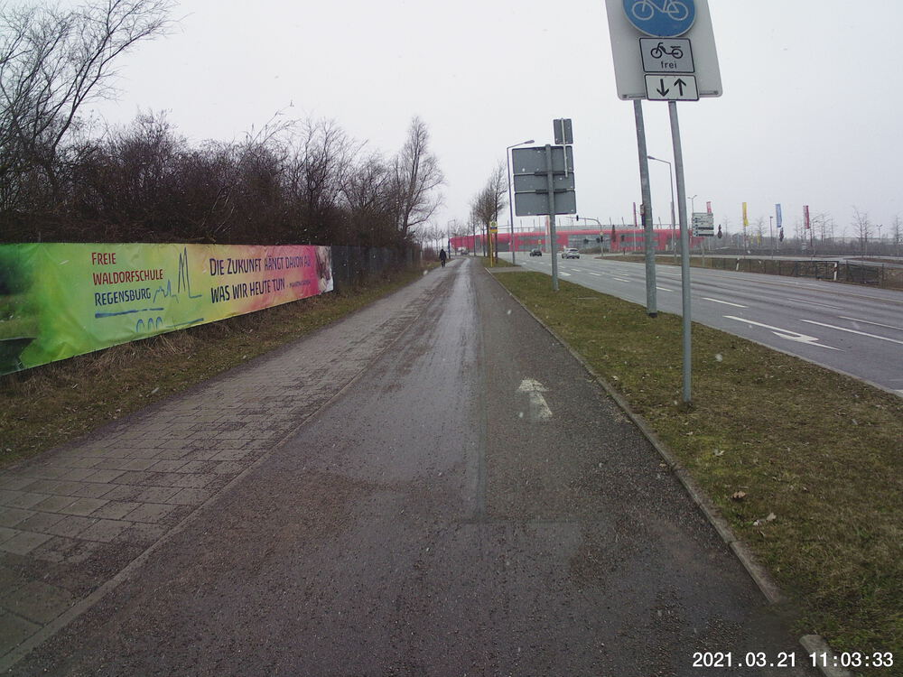
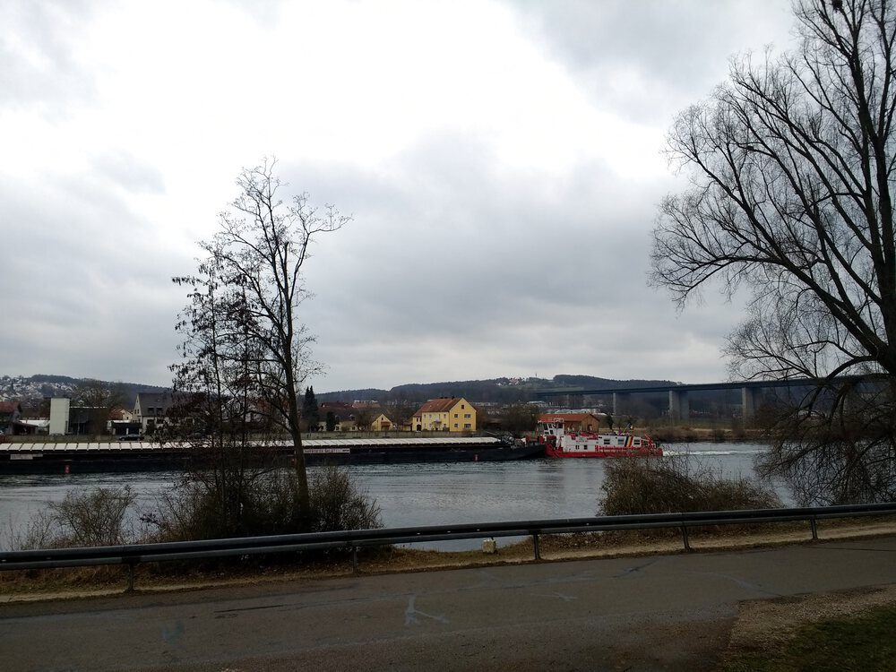
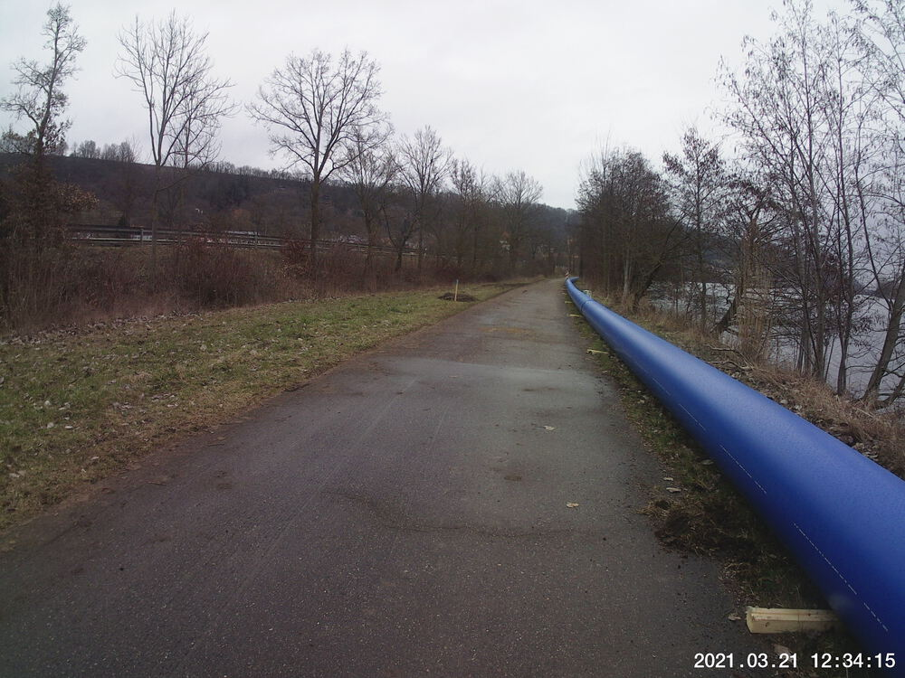
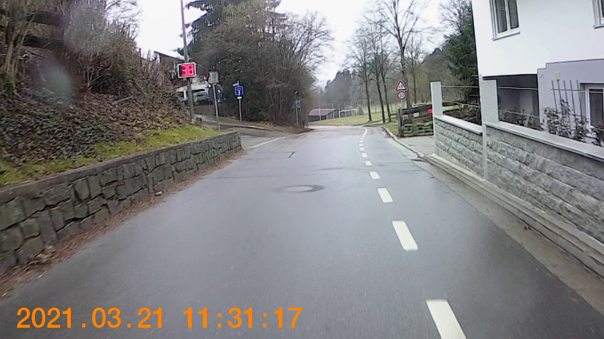
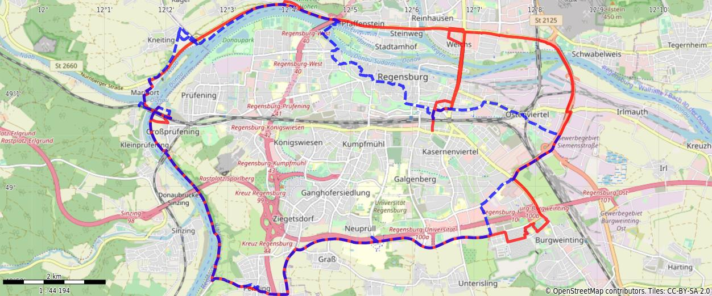

Regensburg Loop Plagued by Detours
Despite the weather prediction I got out there again today. I had planned to do a ring around Regensburg so that I wouldn’t be obligated to wear a mask, which I rather dislike while on my bike (it’s not so bad except for the fact that I wear glasses). Almost right off the bat, I veered off from my planned course, but this only resulted in a a total route of a few kilometers less than the original route. At at least two more points along the way, path closures forced me to deviate.
I was a little underdressed, but it was mostly fine as long as I kept moving. My jamaica tea break along the Danube was well-placed.
Snaps

The snow was the wet, blowy, sting-y kind that hurts upon impact with your face.
Wenn Wasser oder Feuersnoth
Verderben Deinern Kindern droht
Dan Herr nim uns in Deinen Schutz
und biet dem Elementen Trutz
My Q&D translation:
Should a water or fire emergency
Threaten to ruin your children
Then Lord protect us
and show the element defiance


I didn’t realize I was on a closed path until I got to the end of these hundreds of meters of pipes.
Video Recap
None today; just a still of me exceeding the speed limit.

Route
You might need to tap or click the map to make it bigger. The red solid route was my intention. The blue dashed route is my actual route.

{kind=link}
Stats
Total Distance: 28 km
Time: 2:02
Calories: 1563
Calories from fat: 12 %
Average Heart Rate: 140
Maximum Heart Rate: 164
Fat Burn: 0:03
Fitness: 1:59